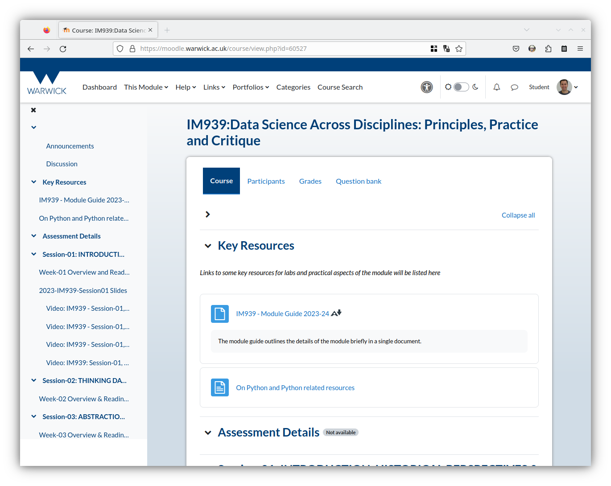
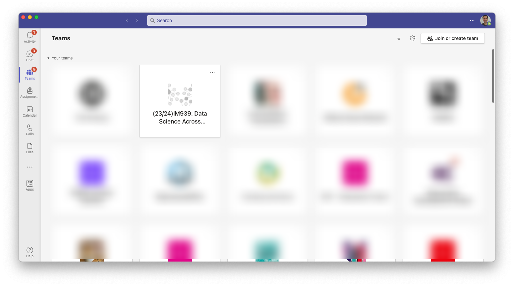
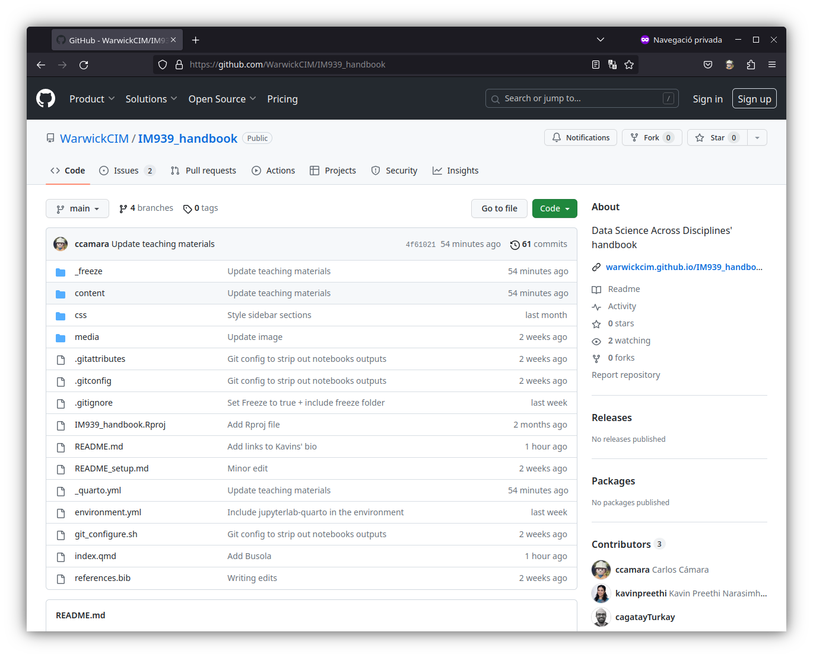

There are a number of different types and formats of teaching materials for IM939: Data Science Across Disciplines: pre-recorded sessions, readings, handbooks, labs… as well as different communication channels. In this section we will explain how we use different channels/platforms for storing those materials and how/when you should use each of them.
Moodle
This is the primary source of information and communication. As a source of information, Moodle contains all links to every teaching materials that we will be used in this module. Materials are organised by units/weeks and can be of different types:
Pre-recorded videos
Labs’ materials
Handbook units
Readings
…
As a communication tool, Moodle provides contains an Announcement board, where teaching staff can post any important updates about the module1, and a Discussion Forum, where anyone can ask (and answer!) questions, expand on some topic or discuss anything related to the module.
1 Every time a new message is created on the announcements’ board, Students will receive a copy in their email inboxes.

IM939 Moodle course
Microsoft Teams
This is where the real-time communication takes place. IM939 has a dedicated team channel for students and staff. You can use it to ask questions, make comments, react… or even share materials with the rest of the class on real time. Please note that every student will have access to what it is said or shared, so treat this channel as if it was public, and never share private information.

IM939’s team on Microsoft Teams
Online Handbook
The online book that you are reading now is the companion handbook for the module2. It contains the contents you’ll need to follow the coding labs and the hands-on parts of the module presented in an read-friendly format and organised around sections (one per week). Each session consists of information about the session, one or more “labs” which are narrated computational artefacts and some exercises that encourage you to tackle specific questions.
2 To avoid confusions with the Module’s PGT handbook, we will use online handbook to refer to the online book that can be accessed on https://warwickcim.github.io/IM939_handbook/
Additionally, every page combines detailed explanations, code blocks showing code and output (see Figure 1), bibliographical references, side notes… as well as clear sign posting and search features to help you find the information you are looking for and to make the learning process, easier.
Code blocks
Code blocks represent what you would need to type in Python’s terminal, script or notebook. You can copy their content and paste it in your IDE to run the code or copy and paste and try to modify it to experiment with it and learn how the code works.
# This is a comment in a code block.import pandas as pd url ="https://raw.githubusercontent.com/WarwickCIM/IM939_handbook/main/content/labs/Lab_1/data/office_ratings.csv"df = pd.read_csv(url)# Show data frame.df.head()
season
episode
title
imdb_rating
total_votes
air_date
0
1
1
Pilot
7.6
3706
2005-03-24
1
1
2
Diversity Day
8.3
3566
2005-03-29
2
1
3
Health Care
7.9
2983
2005-04-05
3
1
4
The Alliance
8.1
2886
2005-04-12
4
1
5
Basketball
8.4
3179
2005-04-19
Figure 1: An example of code block and its output. In this case, a dataframe.
You can use this handbook as a regular book you can read prior to, during or after the teaching sessions to either prepare, follow or refresh key concepts in the coding labs for every unit.
But you can also use this handbook as an invitation to experiment: you can copy the code in the examples, pasting it into your notebook and even changing some parameters to see how the output changes.
Work in progress
This first edition of the handbook is a live document. That means that teaching staff will be updating the materials on a weekly basis, making sure that materials for the current week are updated. This means you may want to check for changes on the handbook every week.
From a technical standpoint, this book has been created with quarto and most of the chapters (i.e., all the labs) are actually the same jupyter notebooks that you will be using during the labs’ sessions. You can see the code in this Github Repository and even try to reproduce the entire book! (see below)
Labs’ notebooks
Labs notebooks are jupyter notebooks that will be using during the weekly face to face workshops3. They contain explanations and code that students will have to work during the session to reproduced, modify and understand the code and concepts for every unit. Strictly speaking, each of those noteooks is exactly the same as every chapter in the book prefixed as “Labs:”.
3 As you will see in the course, jupyter notebooks are a special type of files with the extension *.ipynb that combine rich-text format
Setting up your machine
To follow the Labs’ sessions, basides Python, you will need to install the required software and packages that we will be using. Please refer to Appendix A for instructions on how to do it.
GitHub repository
This is where the source code for the online handbook (and therefore, the labs and exercises) reside. Strictly speaking you do not need to do anything with this, but if you are familiar with Git, you may want to get yourself a copy and learn a complementary set of valuable skills by reproducing its contents.

GitHub Repository containing the handbook /teaching materials’ source code